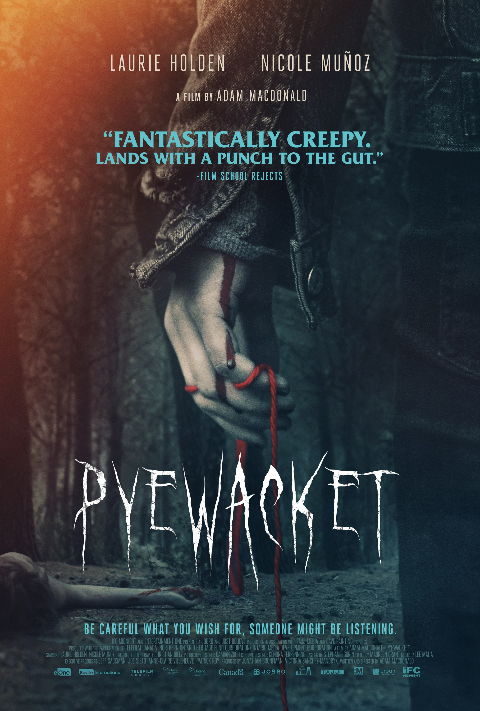

Hello Mary Lou


from Outer Space
I was lucky enough to have 2 older sisters that were my gateway into horror. They would have sleepovers all the time. My mom would drive us all to the local video store. I would pick out a cartoon, while they usually went straight to the horror section. I was about 6 years old when I watched my first horror movie. I still remembering seeing them pick up the case for Halloween. That emotionless face and those black eyes struck fear in me. That night, they let me sneak down and watch it with them. I was excited and scared at the same time. I remember thinking that Tommy and Lindsay didn't seem that much older than me. That night, I didn't sleep. As time went on, they introduced me to the first 5 movies, along with other classics like Candyman, Child's Play and Jaws. This just further fueled my love for the genre.
Now this is a tough one. Anyone who knows me knows that I'm infamous for saying "This is my favorite movie" quite often. My list is comprised of different films that meant something to me. With that being said, my favorite films, in no particular order are as follows:
|
|
|
|
|
| Halloween | Candyman | Get Out | Suspiria | Prom Night 2: Hello Mary Lou |
|
|
|||
| Killer Klowns from Outer Space |
The Exorcist | Trick 'R Treat | Hell House LLC | Creepshow |
I would say my favroite sub-genre is found footage. I think there is a plethora of very underrated and unknown found footage films that most people don't know exist. One thing I love about found-footage films are that they usually aren't large budget films. Therefore they have to depend on good acting and a well written story. Of course The Blair Witch Project really cemented
This one made me really think and I had to write down 4. There are many movies I recommend to people, but in my opinion, these films are some of the most underrated films I've seen that deserve so much more credit.
Haunt has a very cool premise. We've all heard of "extreme" haunted houses. The ones where the actors can actually chase you, grab you and more. Haunt is about a group of college kids that stumble across what they believe to be an extreme haunted house. Unfortunately, there's more than meets the eye. I feel everyone should watch this one at least once because of the originality of the story, the actors do a great job of being very believable and the character that "work" at the haunted house. I, for one, am excited for Trick or Treat Studios to release these masks later this year.

Summer of '84feels like it's a Stephen King / Stranger Thigns crossover. The story follows a group of friends who's small town is rocked when kids start going missing. Everyone is a suspect. Directed from the brillaint minds that brought us Turbo Kid (which I also highly recommend!) François Simard, Anouk Whissell, and Yoann-Karl Whissell know how to bring moments of intensity with much needed comic relief. Scored by Le Matos who's synthwabe beats are just as energetic as their score in Turbo Kid, you will be on the edge of your seat until the stunning conculsion.)
Pyewacket was a movie I discovered one Friday night on Hulu. The story is about a girl who moves to a small town with her mom. She falls into the wrong crowd and starts to mess with witchcraft. After getting into a fight with her mom, she summons the demon "Pyewacket" to kill her mother and quickly regrets her decision. The film has some very chilling moments with some jumpscares. I highly recommend it!
Tragedy Girls has hints of a modern day Heathers, rolled into a dark horror comedy with two fantastic "Final Girls". The story follows best friends Sadie and McKayla. The two are trying to get their true crime social media site off the ground, but to no avail. So they come up with an idea of how they can get the inside scoops on a possible serial killer in their small town....by murdering people themselves.
This is a tough one. When I moved to Columbus, I was advised that there was an amazing independent movie theater called The Gateway Film Center. After my first vist to see The Texas Chainsaw Massacre, I was hooked! I got to see Jaws on 4th of July weekend, Annabelle Creation with the creators of the Annabelle doll along with the doll, Return of The Living Dead presented on VHS. However, my favorite movie theater experience would be when I had the opportunity to see the Columbus, Ohio premiere of the Director's Cut of Suspiria in 35mm. The excitement in the theater was unreal. It was only shown for 3 nights, and all 3 showings sold out very quickly. From the opening chords of the main theme by Goblin, to seeind the "bat on a string" scene from the director's cut to the ending credits, I took in that film with a smile on my face the whole time. That is one theater that I can't wait to open again post-pandemic. It's a movie lovers dream!